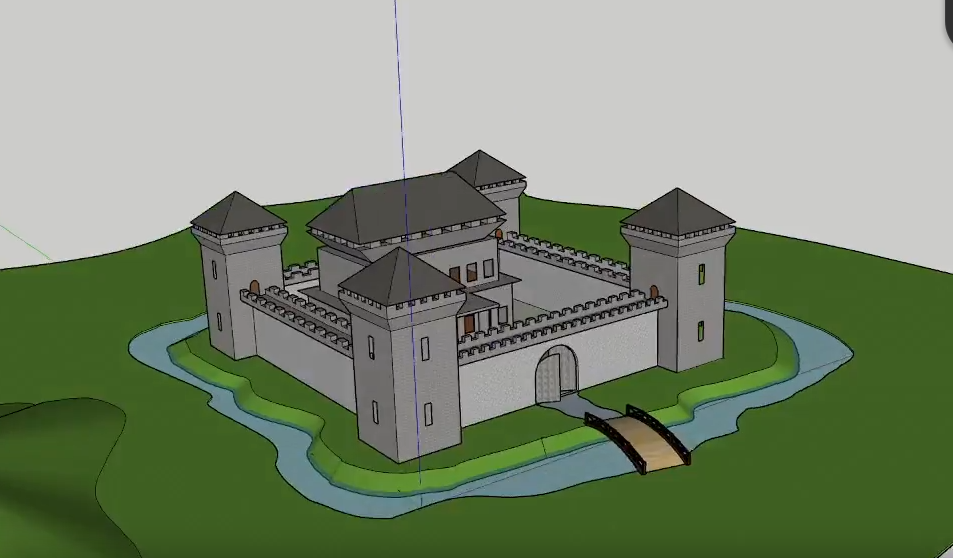
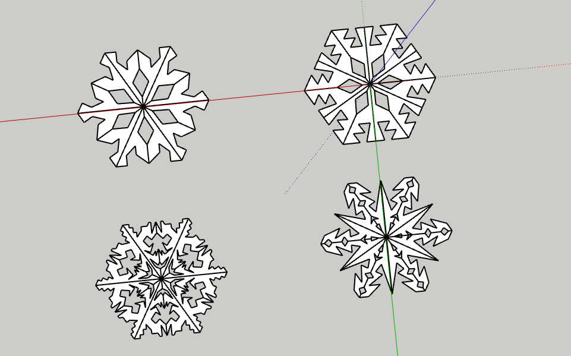
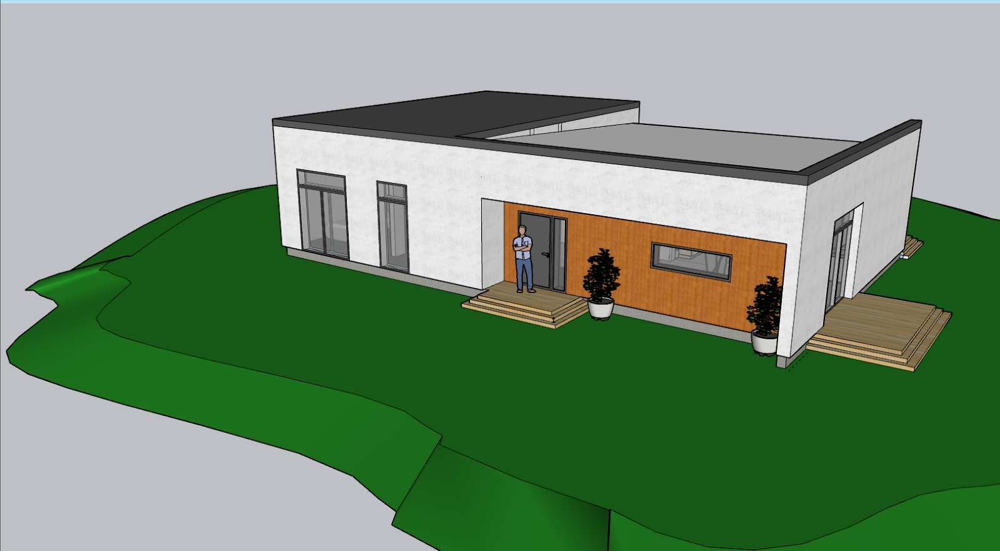

Minust
Olen võimeline pakkuma kesktasemel probleemilahendusoskusi oma klientidele. Lisaks suudan otsida täiendavat infot, et teha oma tööd efektiivselt. Mul on kiire reageerimisvõime probleemide ilmnemisel ja nende lahendamisel.
Minu suurim unistus on saada Linuxi serverite administraatoriks. Olen valmis pühenduma Linuxi serverite teenuste püstitamisele ning vajadusel olen valmis selleks lisaks õppima.
Minu tugevad küljed hõlmavad ausust ja kohusetundlikkust. Olen täpne ning pean kinni seatud tähtaegadest. Suudan mõelda nii inglise kui eesti keeles paralleelselt, omades uudishimu erinevate valdkondade vastu. Olen rahuarmastav ja hindan huumorit.
Mis puudutab nõrkusi, siis olen mõnikord tundlik taustamüra suhtes teatud olukordades.
Mida ma teen
-

Kaablite haldus
Minu oskused kaablite haldamisel kindlustavad sujuva ühenduvuse ja optimaalse jõudluse eri süsteemide vahel.
-

Skriptimine
Olen pädev skriptimises, luues tõhusaid lahendusi erinevate süsteemide automatiseerimiseks ja optimeerimiseks
-

Linuxi kasutamine
Omades kogemusi Linuxi platvormi kasutamisel, suudan tõhusalt hallata süsteeme ja lahendada probleeme selles keskkonnas
-

Windows kasutamine
Olen pädev Windowsi platvormi kasutamisel, osates tõhusalt hallata süsteeme ja lahendada probleeme selles keskkonnas.


{kind=link}
{kind=link}
![Design Lego Minifiguur Teises tunnis tegin valmis tavalise kollase Lego minifiguuri ning õppisin kuidas Tinkercad keskkonda paremini kasutata. Ma mõtlesin, et 3D mudelite tegemine on lihtne, kui mul on olemas juhis. Hea oli see, et õppisin kuidas 3D mudelleerimist sellel veebilehel kiiremini teha erinevate tööriistade abiga. Selle tunni mõte oli õppida, kuidas teha midagi keerulisemat. Oleks veel saanud teha minifiguurile mütse või riideid, kuid mina veetsin ülejäänud aja kuulipildujat tehes. Kui situatsioon kordub, kasutaksin rohkem joondus tööriista.](./assets/images/8.png){kind=link}
![ Design Loss Neljandas tunnis hakkasin tegema lossi, millel olid värav, seinad, kaitsekraav ja vibutorn. Tundsin, et selle lossi tegemine oleks olnud ilma näidiseta raske, kuid sain hakkama. Jätkuvalt pole ma harjunud kaamera/vaate liigutamisega, kuna selle jaoks pean kasutama ainult hiirt või puuteplaati, mitte WASD või nooleklahve. Selle situatsiooni mõte oli midagi suurt teha ja sellest animatsioon teha. Oleks saanud kõike korralikumalt ja ühtlasemalt teha. Kui alustaksin uuesti, siis oleks töö kvaliteetsem ja läbimõeldum.](./assets/images/13.png){kind=link}
![ Design Lumehelbed Viiendas tunnis tegin 4 erinevat lumehelvest komponentse tööriista abiga. Alguses ei saanud ma aru, kuidas joondada lumehelbeid korralikult, kuid peale katsetamist taipasin, kuidas neid teha kiirelt ja efektiivselt. Seekord oli asi lihtne, kuna kõik, mis tegin oli 2D. Selle tunni mõte oli näidata, kuidas component- tööriista saab kasutada. Oleks võinud pöörata enam tähelepanu disainile. Kui tuleks veel lumehelbeid teha, siis uuriksin internetist erinevaid disaine, mille järgi ideid eelnevalt koguda ja teha enda töö paremaks.](./assets/images/11.png){kind=link}
![ Design Maja Kuuendast kuni kaheksanda tunnini tegin valmis ühekorruselise maja. Mööbli lisamisel poleks arvanud, et Sketchup veebirakendus hakkiks nii palju, et poleks võimalik korralikult liigutada ning sellepärast võtsin kasutusele Sketchup Pro rakenduse. Selle töö käigus sain aru, et sketchup võib teha suvalisi ühendusi ning eemaldada paari seina ning põrandat. Seda ülesannet tehes tegin kaks maja, kuid esimest maja ei lõpetanud, kuna see oli päris kehvasti tehtud. Selle situatsooni mõte oli see, et teha suurem projekt joonise ja piltide järgi. Oleks saanud Esimiese maja valmis teha, mis oleks olnud kahe korruseline. Kui situatsioon kordub teeksin üks korrus korraga ning sisustaks maja enne kui teise korrusega alustaksin.](./assets/images/12.png){kind=link}
![Design Renault FT-17 Kahe nädalavahetusega tegin valmis prantsuse Renault FT-17 tangi. Seda tööd tehes ma ei järginud töö juhendit nii täpselt, kuna ma ei kasuta Windows kümmet ning arvasin, et selle asemel oleks mul parem leida programm, mida ma tulevikus võiksin isegi kasutada ma tulevikus võiksin isegi kasutada vabal ajal ilma litsensi tasuta. Blender programmi õppimise ajal poleks arvanud, et ma oleks asjad nii kiiresti tava kasutaja tasemel selgeks õppinud. Ma poleks arvanud, et enamus blender kiirklahvide meelde jätmine oleks nii lihtne. Suureks ajakuluks oli aga keerukas uus kasutaja liides mulle. Situatsooni mõte oli see, et praktika ajal oleks meil midagi muud teha vabal ajal. Oleks saanud veelgi detailsemalt tangi teha või isegi detailsem tekstuur lisada. Kui saaksin seda uuesti teha, teeksin kõik kiiremini.](./assets/images/tank.png){kind=link}